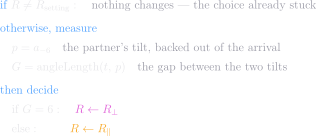

What an arrival does
Where each mode stops

Which mode to be in — measure, then decide, and it is the only update that reads the arrival's own tilt



t — this node's own tilt
a — what arrived, which is the partner's NORMAL, already a quarter turn off its tilt
the partner's own tilt, backed out of the arrival — dashed, because it is inferred and never sent
this is the one place the gap between the two TILTS is measured; everything else measures the arrival directly
it runs once, on the first arrival, and the answer sticks until a reset
Which slot to go to — measure, then decide

ONE measurement, and it is taken where the node already is — not at the two places it could go. The old form read ℓ at t, t+1 and t−1 and compared the results, which is a machine choosing the better of its next two positions without working out where it was heading
the way DOWN never appears: the two ways round the count-ring sum to 12, so asking which is shorter is asking whether the way up is at most 6
the two f lines being 6 apart is the audit's "one mode is the other upside down", written as arithmetic
an update writes the END IT COUNTED FROM — the top for half the ring, the bottom for the other half — and reads the other straight off its opposite in the same statement (setTop / setBottom). The normal still follows, because it is a link and nothing moves it
f is a quantity of THIS PAGE, not of the node. One arrival turns the tilt at most one slot, so the code asks a comparison and a subtraction and never works out a distance at all — settled tests c against the mode's one stopping count, and step tests the way up against a quarter turn
the deciding never names a mode — by the time it runs, the mode is spent, having produced the one count stopping returns
f survives as a page-side measurement, because "each step lands nearer than it started" cannot be said without one
ℓ, ℓ₊ and ℓ₋ are one function called three times — settled uses the first, step the other two
The other updates
